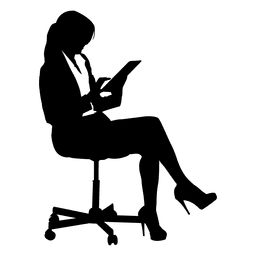

Vragen
Spierweefsel

Kies telkens de meest geschikte oplossing. Klik op de vraag om een verklaring van het juiste antwoord te krijgen, gebruik daarna de “Vorige-” of “Back-” toets in uw browser om naar deze vragenlijst terug te keren.
1. Welke uitspraak over de structuur van de skeletspier is WAAR?
1. De cellen kunnen tot 50 µm lang zijn
2. Er zijn weinig capillairen
3. De A band is anisotroop omdat deze zowel dikke als dunne filamenten bevat
4. Skeletspier bevat vele keratinefilamenten
5. De afzonderlijke myofibrillen zijn te fijn om in lichtmicroscopische preparaten waarneembaar te zijn
2. Welke uitspraak over de componenten van dunne filamenten is WAAR?
1. Tropomyosine bindt aan calcium
2. Troponine verhindert de interactie tussen actine en myosine
3. Tropomyosine is het hoofdbestanddeel van de dunne filamenten
4. G-actine is een filamenteuse polymeer in de vorm van een dubbele helix
5. G-actine moleculen zijn apolair
3. Welke uitspraak over de satelietcellen is WAAR?
1. Ze worden beschouwd als inactieve myoblasten
2. Ze liggen buiten de basale membranen van de skeletspiercellen
3. Ze liggen binnen de basale membranen van capillairen en venulen
4. Ze maken deel uit van het mononucleaire fagocytensysteem (MPS)
5. Ze produceren het endomysium
4. Elke sarcomeer in een skeletspiercel:
1. wordt in twee delen verdeeld door een M lijn
2. bestaat uit een volledige I-band en twee halve A-banden
3. behoudt zijn lengte tijdens contractie
4. is donkerder in de I-band zone en lichter in de A-band zone
5. heeft twee H-banden
5. Wat gebeurt er tijdens de contractie van een skeletspier? Kies de meest nauwkeurige omschrijving.
1. Calcium wordt actief opgenomen door het sarcoplasmatisch reticulum
2. Tropomyosine hecht actine aan myosine
3. Adenosine trifosfaat (ATP) hecht zich aan actine
4. De hydrolyse van ATP veroorzaakt een conformatieverandering in de myosinemoleculen
6. Welke uitspraak over de componenten van dunne filamenten is WAAR?
1. De neuromusculaire verbinding stimuleert de influx van sodium, en initieert zo een actiepotentiaal in
het sarcolemma
2. De neuromusculaire verbinding stimuleert de influx van calcium, en initieert zo een actiepotentiaal in
het sarcolemma
3. elektrotonische transmissie van de actiepotentiaal van het axolemma over de synaptische
spleet zorgt ervoor dat het sarcolemma doorlaatbaar wordt voor sodium
4. De activering van het sarcolemma door cholinesterase initieert een actiepotentiaal
5. Cholinesterase in de basaalmembraan activeert acetylcholine (ACh)
7. Waarin verschillen rode spieren van witte spieren?
1. Rode spieren contraheren sneller dan witte
2. Rode spieren zijn afhankelijker van anaërobe glycolyse dan witte spieren
3. Rode spieren zijn vlugger vermoeid dan witte
4. Rode spieren bevatten meer mitochondriën dan witte
5. De neuromusculaire verbindingen zijn complexer in rode dan in witte spieren
8. Welke uitspraak over de ontwikkeling van de skeletspier is WAAR?
1. Mesenchymcellen differentiëren in myotubuli
2. De uiteinden van myotubuli versmelten en vormen zo multinucleaire myoblasten
3. Myofibrillen ontstaan het eerst in de myoblasten
4. Pericyten zijn myogene cellen die binnen de basaalmembraan aanwezig blijven na vorming van de
definitieve spiercellen
5. De innervatie van een spiercel bepaalt het type spiercel
9. Welke uitspraak over de opbouw van het skeletspierstroma is WAAR?
1. Het endomysium is dicht bindweefsel
2. Het perimysium omsluit individuele spiercellen
3. Het epimysium omkapselt individuele bundels van spiervezels
4. Het stroma vergemakkelijkt het verkorten van de spier
10. Hoe verschilt de excitatie-contractiekoppeling in hartspier en in skeletspier?
1. Het korter worden van de sarcomeren ten gevolge van calciuminflux komt alleen in skeletspiercellen
voor
2. Enkel in skeletspiercellen bepaalt de hoeveelheid calcium die vrijgezet wordt de mate van contractie
3. Enkel in skeletspiercellen veroorzaakt depolarisatie van T tubuli een calciuminflux
4. De contractie duurt minder lang in hartspiercellen
5. Enkel in hartspiercellen dringt calcium de myofibrillen binnen zowel vanuit de T tubuli als vanuit het
sarcoplasmatisch reticulum
11. Hoe verschillen gladde spiercellen van andere types spiercellen?
1. In gladde spiercellen worden actiepotentialen van cel tot cel doorgegeven via gap junctions
2. In gladde spiercellen is het cytoplasma acidofiel
3. De contractie van gladde spiercellen berust niet op een calciuminflux in het gebied van de dikke en
dunne filamenten
4. Het cytoplasma van gladde spiercellen ziet er homogeen uit onder de lichtmicroscoop
5. Gladde spiercellen hebben geen bindweefselstroma
12. Wat gebeurt er NIET tijdens de hypertrofie van skeletspier?
1. Een toename in de diameter van de spiercellen
2. Een toename in het aantal nuclei in iedere spiercel
3. Een deling van de spiercelkernen
4. Een fusie van satelietcellen met spiercellen
5. Een toename in het aantal myofibrillen
13. Duid aan welke van de volgende uitspraken over hartspiercellen onjuist is?
1. De cellen van de sino-atriale knoop zijn kleiner dan andere hartspiercellen
2. De vezels van Purkinje zijn groter dan andere hartspiercellen
3. Atriumcellen zijn kleiner dan ventrikelcellen
4. De rechtse ventrikelcellen zijn de voornaamste producent van een peptide dat het water- en
zoutevenwicht beïnvloedt
5. Hartspiercellen bevatten diaden in plaats van triaden